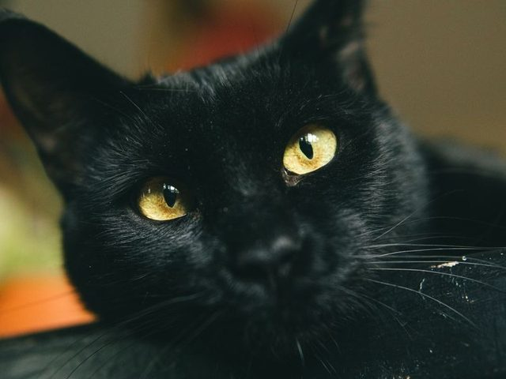
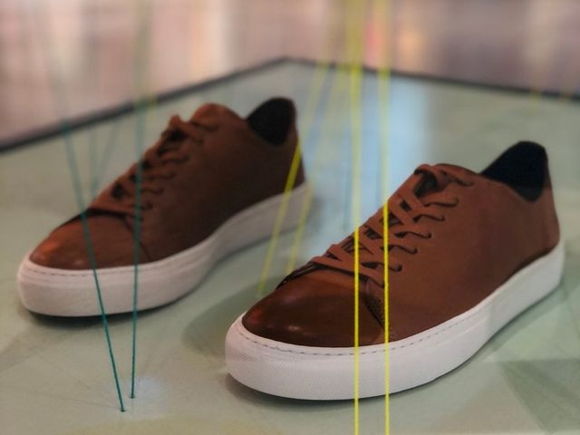
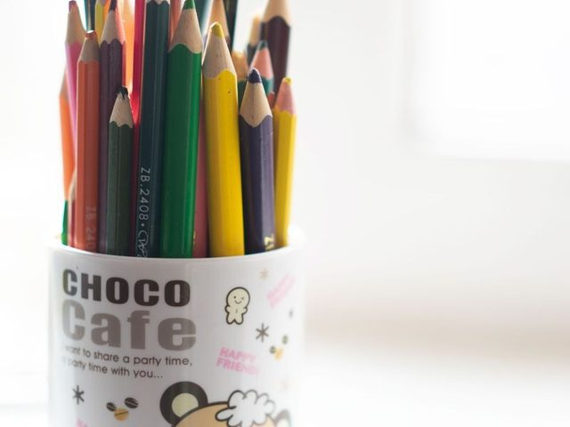
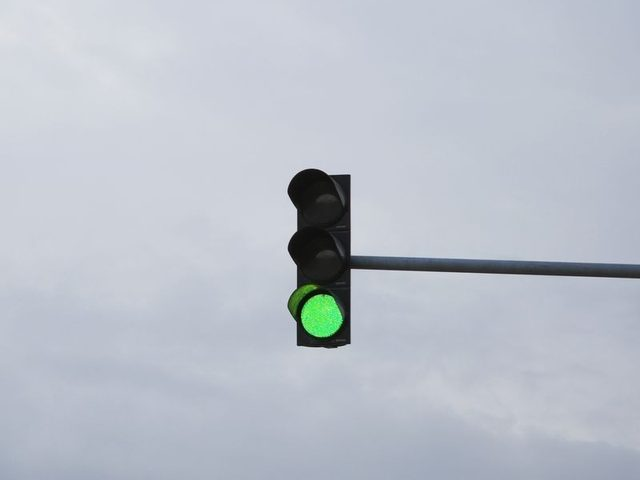
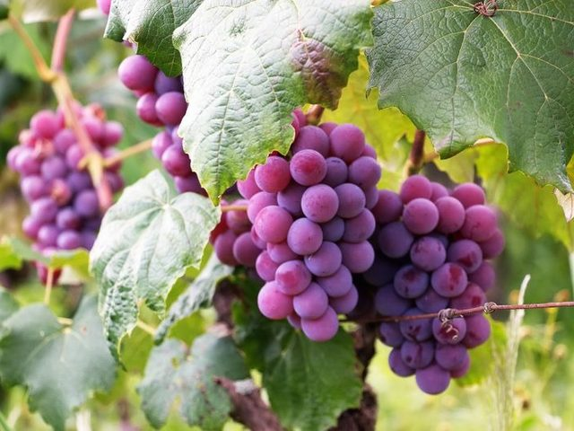
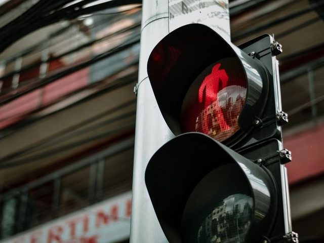
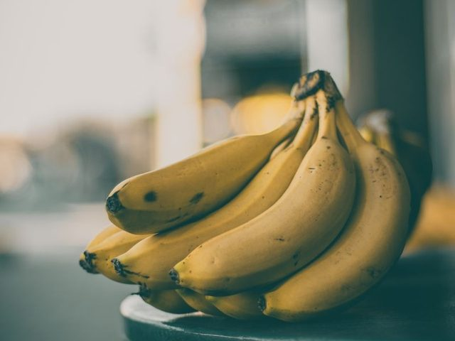

1blackadj./n.
黑色（的）
black sheep 害群之馬
My cat is black, so it is hard to see at night.我的貓是黑色的，所以晚上很難看到牠。
2blueadj./n.
藍色（的）
feel blue 心情低落
The sea looks so blue on a sunny day.晴天時大海看起來好藍。

3brownadj./n.
咖啡色（的）；棕色（的）
brown sugar 黑糖
He put on his brown shoes.他穿上他的咖啡色鞋子。

4colorn.
顏色
What color…? 什麼顏色
What color is your new bike?你的新腳踏車是什麼顏色？
5grayadj./n.
灰色（的）
gray hair 白頭髮
The sky turned gray before the rain.下雨前天空變成灰色。

6greenadj./n.
綠色（的）
green hand 新手
Traffic lights turn green, and we can cross the street.紅綠燈變綠了，我們可以過馬路。
7orangeadj./n.
橘色（的）
也當名詞「柳橙」
The leaves turn orange in the fall.秋天葉子變成橘色。
8pinkadj./n.
粉紅色（的）
She has a pink umbrella.她有一把粉紅色的雨傘。

9purpleadj./n.
紫色（的）
Grapes can be green or purple.葡萄可能是綠色或紫色的。

10redadj./n.
紅色（的）
turn red 臉紅
Stop! The light is red.停！現在是紅燈。
11whiteadj./n.
白色（的）
white lie 善意的謊言
Snow is white and cold.雪又白又冷。

12yellowadj./n.
黃色（的）
Bananas turn yellow when they are ripe.香蕉熟了會變黃色。